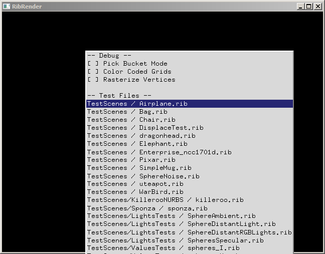

| Authors: | Davide Pasca |
| Version: | 2010/6/8 |
Contents
You may need to perform a one-time install of the freely redistributable CRT libraries from Microsoft, downloadable here or from the RibTools binaries package at Install\vcredist_x86.exe.
From the RibTools distribution directory, launch the file MakeTests.bat, wait for it to complete and enjoy some fine renderings generated in the TestsOutput directory.
Three executables are currently distributed: RibRenderToy, RibRender, RibRenderServer and RSLCompilerCmd.
This is a minimally interactive application that will render any RIB file present in the TestScenes directory.
Launch the application, right click in the window to open a menu from which to choose a file to render.

Note that RibRenderToy always redirects the rendering to the application window, ignoring any target specified by the Display command in the RIB files.
This command will render a scene described by a RIB file into an image file or in a window.
From a command line, type RibRender -h to get the following help:
==== RibRender v0.9 -- (Feb 16 2010 - 02:54:03) ====
RibRender <rib file> [options]
Options:
-help | --help | -h -- Show this help
-server <address>:<port> -- Specify an IP and port number for a render server
-forcedlongdim <size in pixels> -- Force the largest dimension's rendering size in pixels
-colorgrids -- Show grids in false colors (for debugging)
Examples:
RibRender TestScenes/Airplane.rib
RibRender TestScenes/Airplane.rib -server 192.168.1.107 -server 192.168.1.108:30000
RibRender TestScenes/Airplane.rib -forcedlongdim 1024
Note: RIB scene description files usually specify the output format with an explicit Display command.
Therefore, a RIB file may decide whether the output will be in the form of an image file (usually TIFF) or in a window for display.
If no Display command is found, RibRender will automatically generate an RGBA TIFF image named frame0001.tif.
This command acts for a render server for any RibRender command that will accesses this application thought the machine's IP and selected port.
From a command line, type RibRender -h to get the following help:
==== RibRenderServer v0.9 -- (Feb 16 2010 - 02:54:00) ====
RibRenderServer [options]
Options:
-help | --help | -h -- Show this help
-port <port> -- Wait for connection at port <port>
Examples:
RibRenderServer
RibRenderServer -port 31111
Note: RibRenderServer gives an additional capability to distribute rendering but it is not necessary as RibRender is fully capable of rendering on its own.
This command is included only for internal testing purposes. It compiles a .sl file into a RibRender .rrasm file type. Such operation is done internally by the renderer, and the user does not normally need to run this command explicitly.
In order to run the RibRender, RibRenderServer and RSLCompilerCmd commands from the command line shell from any directory in the system, the RIBTOOLS_DIR environment variable must be set.
In DOS/Windows this is accomplished by doing:
SET RIBTOOLS_DIR=<Path>
Where <Path> is the pathname where the executables are, along with the ribtools.ini file (this file is used also to confirm that the directory is indeed RibTools' directory).
SET however is not permament. To set an environment variable that persists after a reboot in Windows XP and above, use the following instruction from Microsoft.